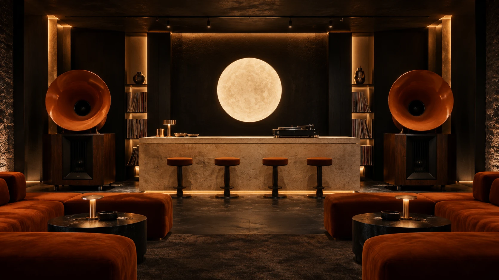

INDEPENDENT SPIRIT. ANALOG SOUL.LISTENING BAR / EST. IN IMAGINATION
FOR THERECORD.
Good music deserves
your undivided attention.
THE ROOM↗
100% FEELING
↓ SCROLL TO FIND YOUR FREQUENCY

A BETTER KIND OF GOING OUT.
A ROOM
FOR SOUND.
LOW LIGHT. DEEP CUTS. GOOD COMPANY.
A place to lose track of time.
And find a little of yourself.
NO BACKGROUND MUSIC HERE.
Some things deserve
to be felt. A favourite
record. A proper drink.
A night that stays
with you.
Inspired by the listening-bar tradition.
Reimagined for the beautifully curious.
Come as you are. Stay for one more side.
ALWAYS A GOOD IDEA.
THE MOOD IS YOURS.
PICK A SIDE.
Three moods. No wrong turns.
Choose a sleeve. Let it play.
LESS SCROLLING. MORE LIVING.
THE NEXT GOOD NIGHT STARTS HERE.A listening bar for the love of it.
AN INDEPENDENT DESIGN CONCEPT.NO PHYSICAL VENUE. YET.PLAY IT AGAIN